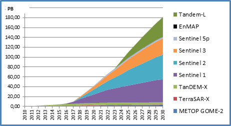
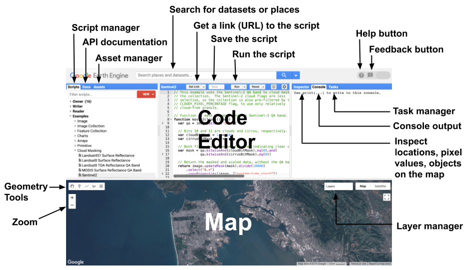
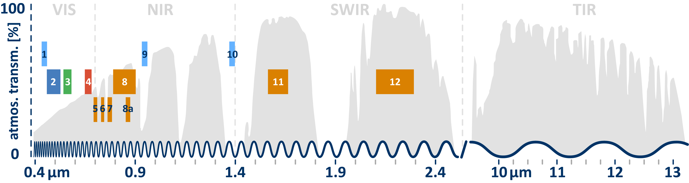
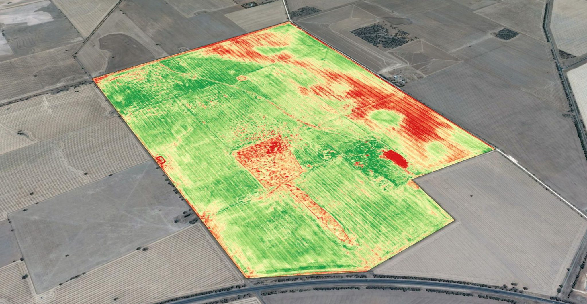

Life Sciences Datalab
Landnutzung mit Drohnenfernerkundung klassifizieren
- Nils Ratnaweera
- ZHAW School of Life Sciences and Facility Management
- Institut für Umwelt und Natürliche Ressourcen
- Grüentalstrasse 14
- 8820 Wädenswil
- +41 (0) 58 934 55 63
- nils.ratnaweera@zhaw.ch
- Position an der ZHAW
- Research Associate in der Forschungsgruppe Geoinformatik
- www.zhaw.ch/iunr/geoinformatik
Remote Sensing
Quelle: www.vrogue.co
Warum in der Cloud?
Datenexplosion

Quelle: dlr.de
Paradigmenwechsel
Daten → Code- Code → Daten
Welche EO Platform?
- Google Earth Engine (GEE)
- Microsoft Planetary Computer (MPC)
- Earth on AWS
- Sentinel Hub
- OpenEO
- Open Data Cube (ODC)
- SEPAL
- JEODPP
- pipsCloud
Plattform-Übersicht
Gomes et al. (2020): An Overview of Platforms for Big Earth Observation Data Management and Analysis
https://doi.org/10.3390/rs12081253
(veraltet)
OpenEO
openEO entwickelt eine offene API, um R, Python, JavaScript und andere Clients auf einfache und einheitliche Weise mit großen Earth Observation Cloud-Backends zu verbinden.
Plattform-Vergleich
…die meisten Leute bevorzugen GEE hauptsächlich, weil es das gute alte zuverlässige System ist, wenn es um EO-Daten in der Cloud geht. Ausgereift, gut dokumentiert und eine riesige Community.
MPC ist der neue Spieler im Feld, sie bieten eine abgespeckte Version von GEE mit dem zusätzlichen Vorteil, die eigene Computing-Umgebung auf Azure zu verbinden.
CO2-Fußabdruck?
Google Earth Engine

geemap
geemap: Ein Python-Paket für interaktive Geospatial Analysis und Visualisierung mit Google Earth Engine
Einführung in Javascript
(sehr kurz)
Erste Schritte
- Öffnen Sie ein Browserfenster
- Drücken Sie
F12, um die Entwicklertools zu öffnen - Gehen Sie zum
console-Tab - Folgen Sie mit! (Demo-Zeit)
Zusammenfassung
Variablen-Deklaration
Anweisungen
HTML Script Einrichtung
- Öffnen Sie einen Texteditor
- Erstellen Sie eine Datei mit der Endung
.html - Erstellen Sie ein
script-Tag
- Öffnen Sie diese Datei im Browser
- Folgen Sie mit! (Demo-Zeit)
Aufgabe 1
- Erstellen Sie eine Variable
mynamemit Ihrem Namen - Erstellen Sie eine Variable
myagemit Ihrem Alter - Berechnen Sie Ihr Alter in Tagen und speichern Sie es in
myage_days - Geben Sie auf der Konsole aus:
Hi, my name is ... and I am ... days old
Demo geht weiter…
Aufgabe 2
- Erstellen Sie eine Funktion, die eine Anzahl von Jahren in eine Anzahl von Tagen umwandelt
- Nennen Sie die Funktion
years2days
Demo geht weiter…
Zusammenfassung
Kommentare
Arrays
Wörterbücher
// Geschweifte Klammern werden verwendet, um "Wörterbücher" zu definieren
var my_dict = {'food':'bread', 'color':'red', 'number':42};
// Eckige Klammern werden verwendet, um auf Elemente zuzugreifen (nach Schlüssel).
my_dict['color'];
// Oder Sie können die Punkt-Notation verwenden, um das gleiche Ergebnis zu erhalten.
my_dict.color;Funktionen
Funktionen (Alternative Syntax)
Javascript in Webseiten
Die Web-Trinität
JS ist Teil einer Trinität, die den größten Teil des Webs definiert

Lass uns erkunden
Lassen Sie uns diese Gelegenheit nutzen, um dies zu erkunden und zu verstehen.
(Demo-Zeit)
Herausforderung
Erstellen Sie eine Anwendung, die Ihren Namen als Eingabe nimmt und den Namen rückwärts zurückgibt.
Tipp: Verwenden Sie die Methoden split, reverse und join.
Erste Schritte in Google Earth Engine
Anweisungen
- Gehen Sie zu code.earthengine.google.com
- Spielen Sie mit dem Code-Editor herum (erstellen Sie Variablen, Wörterbücher, Listen…)
- Navigieren Sie zu einem Ort, den Sie kennen (z.B. Ihre Heimatstadt) über die Suchleiste
- Suchen Sie nach einem Datensatz in der Suchleiste
- Erstellen Sie ein Repo (New→Repo) namens DigitalLifeScience Demos
- Erstellen Sie eine neue Datei in diesem Repo namens Demo_1
Demo 1: Unispectral Data
Aufgabe: Standortauswahl für Erneuerbare Energien
Identifizieren Sie geeignete Gebiete für die Installation erneuerbarer Energien:
- Höhe: 500 - 1000 m ü. M.
- Neigung: 3 - 6°
- Ausrichtung: Südausrichtung, zwischen 315° und 45°
Demo 2: Multispektrale Daten
Elektromagnetisches Spektrum in Sentinel S2

Erstellen Sie ein Echtfarben-Bild
Erstellen Sie ein Echtfarben-Bild aus den R-/G-/B-Bändern
Demo 3: Multispektral NDVI
NDVI: Normalized Difference Vegetation Index

NDVI Formula
\[\text{NDVI} = \frac{\text{NIR}-\text{Red}}{\text{NIR}+\text{Red}}\]
Demo 5: Waldnachwachstum
Ihr eigenes Projekt in Google Earth Engine
Nachmittagsaufgabe
Ihre Aufgabe für heute Nachmittag:
- Implementieren Sie eine der gezeigten Analysen für ein anderes Gebiet (oder setzen Sie Ihre eigene Idee um)
- Laden Sie Ihre Ergebnisse (z.B. als CSV) auf Ihre lokale Festplatte herunter
- Schreiben Sie eine kurze Beschreibung Ihrer Analyse und Ihrer Ergebnisse (verwenden Sie Jupyter, Rmarkdown oder Quarto)
- (Optional): Senden Sie per E-Mail an rata@zhaw.ch
Benotete Aufgabe
Aufgabendetails
Wenden Sie das Fachwissen und die Fähigkeiten an, die Sie in den beiden Remote Sensing Sitzungen erworben haben, um Ihr eigenes Forschungsprojekt zu entwerfen und auszuarbeiten. Beschreiben Sie die Motivation, einen geeigneten Analyseansatz und anwendbare Remote Sensing Daten.
Der kurze Forschungsantrag soll eine Seite nicht überschreiten und kann eine Abbildung enthalten.
Abgabetermin ist eine Woche nach der letzten Remote Sensing Sitzung (2.10.2025)